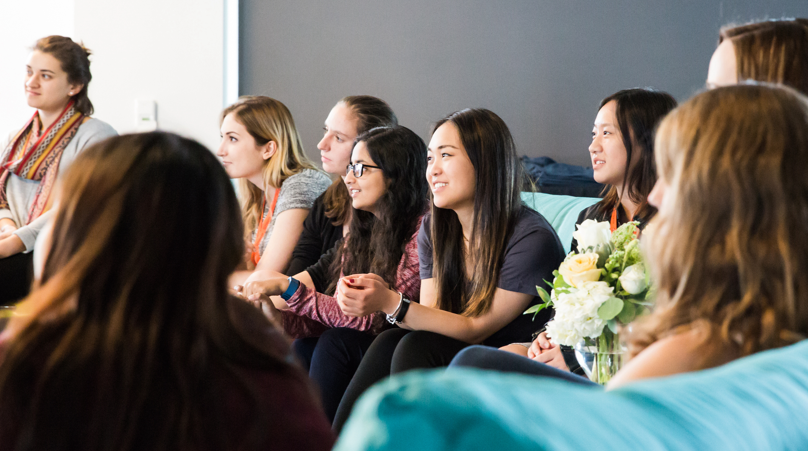

Palantir Women In Technology (Global) Scholarship
Introduction

The Palantir Women In Technology (Global) Scholarship is a prestigious program designed to support and encourage women pursuing careers in technology. With a focus on undergraduate and Master's students outside of North America, this scholarship provides financial assistance and recognition to those majoring in fields such as Computer Science, Software Engineering, or closely related technical areas. The program is a testament to Palantir's commitment to fostering diversity and inclusion within the tech industry. Each year, 10 outstanding applicants are selected to receive the Palantir Women In Technology (Global) Scholarship. These recipients are awarded grants of $7,000 each to support their educational journey and further their ambitions in the tech field.
Students from IGDTUW have earned this prestigious scholarship multiple times, demonstrating their exceptional talent and making a mark on the global stage.
Eligibility
To qualify for the Palantir Women In Technology (Global) Scholarship, applicants must meet the following criteria:
- Must be actively enrolled as an undergraduate or Master's student in an accredited university outside of North America during the academic years the scholarship is awarded.
- Must be majoring in, or planning to major in, Computer Science, Software Engineering, or a closely related technical field.
- Must identify as women.
- Must not have been a recipient of a Palantir scholarship in the past.
Timeline
The scholarship application process typically opens between February and April each year, with results announced by late June or early July. Eligible students must be enrolled in both the current academic year and the upcoming academic year.
Application Process and Requirements
The application process for the Palantir WIT Scholarship is comprehensive and requires several key documents:
- Resume/CV:
- Sections: Your resume should include sections such as education, experience, projects, skills, and extracurricular activities.
- Quantitative Details: Highlight quantitative achievements, such as GPA, project outcomes, and technical skills.
- Projects: Include details of significant projects, particularly those demonstrating technical skills and problem-solving abilities.
- Readability: Ensure your resume is well-organized and easy to read, using bullet points and clear headings.
- Essays (200-400 words each):
- Applicants are required to submit two essays. The questions for the essays are general and situational in nature. These essays should reflect on personal experiences and technical solutions integration.
- Writing Tips: Use quotes to emphasize key points, demonstrate how you take initiative, and maintain a logical flow throughout your content.
- Cover Letter (Optional):
- While optional, a cover letter can enhance your application by providing an introduction and background. It should articulate why you are a good fit for the scholarship, highlighting your experience, academic and professional growth, and how the scholarship would positively impact your journey. Additionally, discuss what aspects of technology are important to you and how you plan to contribute to the field.
Conclusion
For those looking to apply, remember that the scholarship not only evaluates academic and technical prowess but also values personal stories and a commitment to making a difference in the tech world. The opportunity to receive this scholarship is a significant step toward a brighter future in technology, empowering women to lead and innovate.